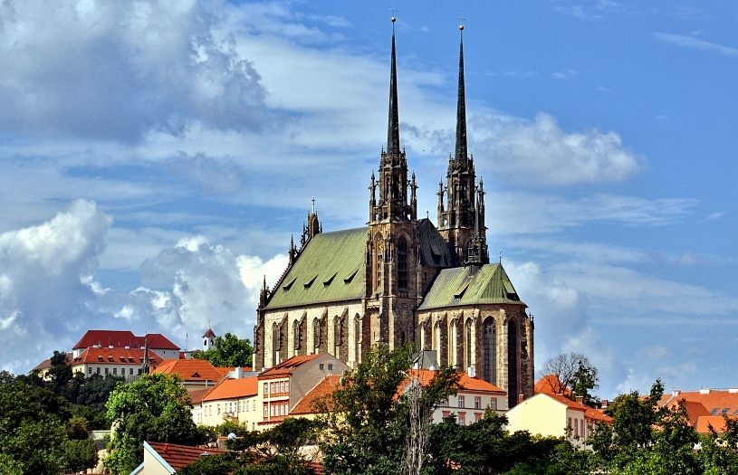

Чехія по праву вважається однією з найкрасивіших країн Європи. Старовинні замки та фортеці, затишні середньовічні міста в оточенні мальовничої природи,
відомі на весь світ броварні, термальні джерела та бальнеологічні курорти – це і багато інших визначних пам'яток Чехії приваблюють туристів з усього світу.
Описати всю красу Праги в невеликій статті неможливо, оскільки їх безліч. Варто побачити Мале місто з розташованими в ньому численними садами та палацами.
І середньовічну фортецю Вишеград. І Злату вуличку. І Страгівський монастир. І багато багато іншого.
Прага
Мандрівники, які приїхали до столиці Чехії, рано чи пізно все одно потраплять на цю площу, навіть якщо не ставлять собі таку мету.
Справа в тому, що Вацлавська площа розташована в самому центрі Праги і пов'язана з багатьма іншими визначними пам'ятками.
Вишгород - це найстаріший район Праги, розташований на березі Влтави на вершині скелястого пагорба.
Вишгород називають суперником Празького граду. За легендою Вишгород (майбутня Прага) був заснований Кроком, сином засновника країни Чеха.
Вишгород став місцем проживання перших чеських князів та княжни Лібуші.
З західного боку до Празького граду примикають Градчани - багатий, дворянський район Праги, що призначався, втім, при заснуванні 1320 для поселення палацової челяді - конюхів, кухарів, переписувачів і слуг.
Стара ратуша - одна з найстаріших будівель у Градчанах, вузький фасад якого прикрашений розписами. Карлів міст, що з'єднує райони Старе Місце і Мала Країна, - одна з найголовніших пам'яток Праги.
При описі цього мосту на думку спадають лише чудові ступені прикметників — найзнаменитіший, найкрасивіший, найстаріший.
Будівництво мосту почалося в 1357 за вказівкою імператора Карла IV.
Карлові Вари
Найвідоміше джерело Карлових Вар - Гейзер - розташоване в однойменній колонаді. Тільки уявіть:
Гейзер викидає воду з глибини у два кілометри, а його температура становить +72…+73°С.
Серед туристів Карлові Вари відомі перш за все як першокласний лікувальний курорт, де любили відпочивати знамениті цього світу — від Петра Великого до Франца Йосипа.
Однак мало хто знає, наскільки велика і велика історія цього міста, вивчати яку найпростіше по карлсбадських церквах і костелах.
Примітно, що вежа імені Гете — найстаріша і найперша оглядова споруда в Карлових Варах, побудована ще 1889 року.
Брно
Замок Шпільберг по праву вважається однією з головних визначних пам'яток Брно, адже саме навколо Шпільберга розросталося та розвивалося стародавнє місто.
Побудований в 13 столітті за указом короля Пржемисла Отакара II, Шпільберг був королівською резиденцією.
Кафедральний собор Св. Петра та Павла вражає своєю красою та величчю. Шпилі двох веж, спрямованих вгору, наче торкаючись неба, видніються з будь-якої частини міста.
Визнаний національною культурною пам'яткою Чехії храм має багату і захоплюючу історію.

Ще один замок Чехії, де мешкає власна загадкова Біла Дама, це Пернштейн. Біла Дама, як ви зрозуміли, це привид, а чому ще один — достатньо почитати описи парочки фортець,
і стане зрозуміло, що свого часу Чехія була країною прокльонів та романтичних панянок.
Маріанські Лазні
Центр будь-якого європейського спа-курорту – це його основний променад, їх зазвичай два – вуличний та критий, і Маріанські Лазні – не виняток.
Найзнаменитіша його визначна пам'ятка, його «візитна картка» — це так звана Колоннада.
Центр будь-якого європейського спа-курорту – це його основний променад, їх зазвичай два – вуличний та критий, і Маріанські Лазні – не виняток.
Найзнаменитіша його визначна пам'ятка, його «візитна картка» — це так звана Колоннада.
Замок Кунжварт був побудований не в Маріанських Лазнях, а як і належить аристократичному маєтку такої величини - за містом.
Але з моменту будівництва міста розрослися, і зараз це місце практично перетворилося на передмістя Маріанських Лазней.
Заснований монастир Тепла якимось місцевим лицарем на ім'я Грозната у вигляді віри через те, що він не зміг піти в хрестовий похід.
Це він збудував перші будівлі та запросив сюди ченців-премонстрантів. Сталося це наприкінці 12 сторіччя.
Пльзень
Кафедральний собор Святого Варфоломія вважається справжньою візитною карткою міста Пльзень — його готичні шпилі, що йдуть вгору,
легко впізнаються на будь-якій видовій листівці, сувенірному магніті або календарі, та безлічі туристичних фотографій.
Однією з найпопулярніших і найкрасивіших пам'яток Пльзеня є Кржижикові сади - мальовничий парк, заснований тут на початку 19 століття.
У ті часи тривалого затишшя та відпочинку від численних воєн та революцій міська рада Пльзеня вирішила, що фортечні стіни місту не потрібні.
Кутна-Гора
Кутна-Гора — «місто срібла» — у прямому та переносному значенні слова виросло на цьому металі.
Його почали видобувати тут ще в 985 р., але до початку 14 століття місто було вже цілком і повністю захоплене здобиччю дорогоцінного металу.
Чим передусім відоме передмістя колись фінансового центру Чехії Кутна-Гори Седлеце? Правильно, знаменита церква Kostnice v Sedlci.
У чеському слові «kostnice» легко вгадується загальний корінь із російським «кістками», це, загалом, і є каплиця, в якій зберігаються людські останки.
Пізньоготичний собор Св. Варвари - мабуть, найвідоміша архітектурна пам'ятка Кутна-Гори. Цей храм є другою за розмірами готичною церквою країни.
Та й релігійне значення його дуже велике.
Чеський середньовічний замок Жлеби знаходиться недалеко від міста Кутна-Гора, за 110 км від Праги. Жлеби має чудове місце розташування - на березі річки Діброви.
Саме тому замок і отримав свою назву: від чеського слова "жлаба", що означає "устя річки".